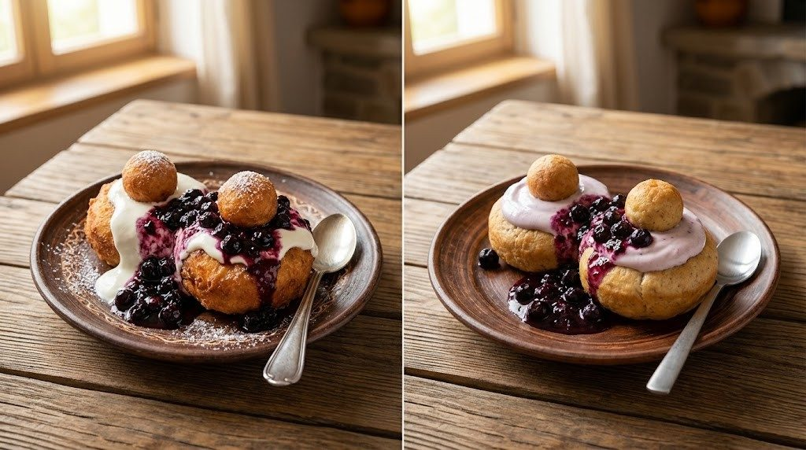

Câte calorii au papanașii? Clasic și varianta la cuptor

ClasicLightPapanași clasici și papanași la cuptor: comparația
Clasic: „Papanași cu smântână și dulceață”, catalogul de alimente NutriRO (278 kcal la 100 g), calculat la 324 g. Light: rețeta „Papanași Moldovenești reinterpretați” din aplicație.
Vezi cum se face rețeta lightIngrediente, mod de preparare și calculator de porții→Toate cifrele
Clasic: „Papanași cu smântână și dulceață” (catalogul de alimente). Light: rețeta „Papanași Moldovenești reinterpretați”.
| Clasic | Light | |
|---|---|---|
| Calorii la 100 g | 278 kcal | 91 kcal |
| Proteine la 100 g | 8 g | 11,3 g |
| Grăsimi la 100 g | 12 g | 1,1 g |
| Carbohidrați (fără fibre) la 100 g | 34 g | 11,3 g |
| O porție de 324 g | ≈ 901 kcal | ≈ 296 kcal |
Coloana „Clasic” are valorile la 100 g din catalogul de alimente NutriRO. Pentru rețeta light, greutatea porției e suma ingredientelor împărțită la numărul de porții, aceeași regulă ca în aplicație; după gătire greutatea se poate schimba puțin.
Ce s-a schimbat în rețeta la cuptor?
- Se coc la 180°C, 20–25 de minute, în loc să se prăjească în ulei.
- Brânză de vaci 0,2% și skyr în aluat, plus albuș, de unde vin proteinele.
- Făină de ovăz și eritritol în loc de zahăr.
- Iaurt 0,1% și afine la servire, în loc de smântână și dulceață.
Rețeta „Papanași Moldovenești reinterpretați” are 4 porții, se face în aproximativ 30 de minute (dificultate: simplu). O porție are ≈ 324 g și 296 kcal: 36,5 g proteine, 3,7 g grăsimi, 36,6 g carbohidrați (fără fibre) și 2,9 g fibre.
Vezi rețeta completă: ingrediente, mod de preparare și calculator de porții →
Cum îi notezi în NutriRO?
- Ai mâncat papanași clasici? Caută „Papanași cu smântână și dulceață” în catalogul de alimente și scrie gramele.
- I-ai făcut la cuptor? Deschide Rețete, caută „Papanași Moldovenești reinterpretați” și adaugă porția în jurnal.
Întrebări frecvente
Câte calorii are o porție de papanași?
O porție de 200 g de papanași cu smântână și dulceață are aproximativ 556 kcal, după valoarea din catalogul NutriRO (278 kcal la 100 g).
De ce au papanașii clasici atâtea calorii?
Sunt prăjiți în ulei, aluatul are făină și zahăr, iar deasupra vin smântâna și dulceața.
Papanașii la cuptor au gust de papanași?
Rețeta păstrează forma (gogoașa cu bilă deasupra), brânza de vaci și aroma de lămâie și portocală. Textura e de copt, nu de prăjit.
Toate rețetele de pe această pagină sunt în aplicația NutriRO, cu ingredientele, modul de preparare și caloriile pe porție. Aplicația e doar în limba română, pentru Android.
Valorile sunt orientative și depind de ingredientele și cantitățile folosite. NutriRO nu înlocuiește sfatul unui medic sau dietetician.